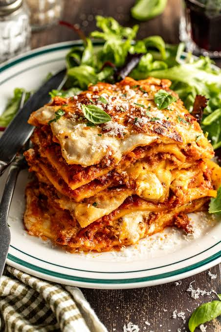

Lasagna
Home

Description
Classic meat lasagna is the ultimate comfort food, layering rich flavors and satisfying textures into a single, magnificent dish. A harmonious symphony of savory meat sauce, creamy cheese, and perfectly tender pasta sheets.
To slice into a warm tray is to experience centuries of Italian culinary tradition perfected across generations of family kitchens.
From personal experience, lasagna tastes even better the next day after the flavors have had time to fully marry, making it an incredible make-ahead meal.
Ingredients
- 1 lb ground beef or Italian sausage
- 12 lasagna noodles
- 1 medium onion, diced
- 3 cloves of garlic, minced
- 1 can (28 oz) crushed tomatoes and 2 tbsp tomato paste
- 16 oz ricotta cheese
- 1 lb mozzarella cheese, shredded
- 1/2 cup Parmesan cheese, grated
- 1 large egg
- The following spices and herbs: salt, pepper, dried oregano, dried basil, fresh parsley
Steps
- Brown the meat: Cook the ground meat with diced onion and minced garlic in a large skillet over medium-high heat until fully browned, draining any excess fat.
- Simmer the sauce: Stir in the crushed tomatoes, tomato paste, basil, oregano, salt, and pepper. Simmer on low heat for at least 30–45 minutes to develop a deep, rich flavor.
- Prepare the cheese mixture: In a medium bowl, combine the ricotta cheese, egg, chopped fresh parsley, and a pinch of salt and pepper until smooth.
- Assemble the layers: Spread a thin layer of meat sauce on the bottom of a 9x13 baking dish. Place a layer of noodles on top, followed by a layer of the ricotta mixture, a sprinkle of mozzarella, and more meat sauce. Repeat the layers, ending with a generous top coat of mozzarella and Parmesan.
- Bake until bubbly: Cover loosely with foil and bake at 375°F for 25 minutes. Remove the foil and bake for an additional 25 minutes until the cheese is golden brown and bubbling.
- Rest and serve: Let the lasagna rest for 15 minutes before slicing to allow the layers to set neatly. Garnish with extra parsley if desired. (Makes 6–8 servings).